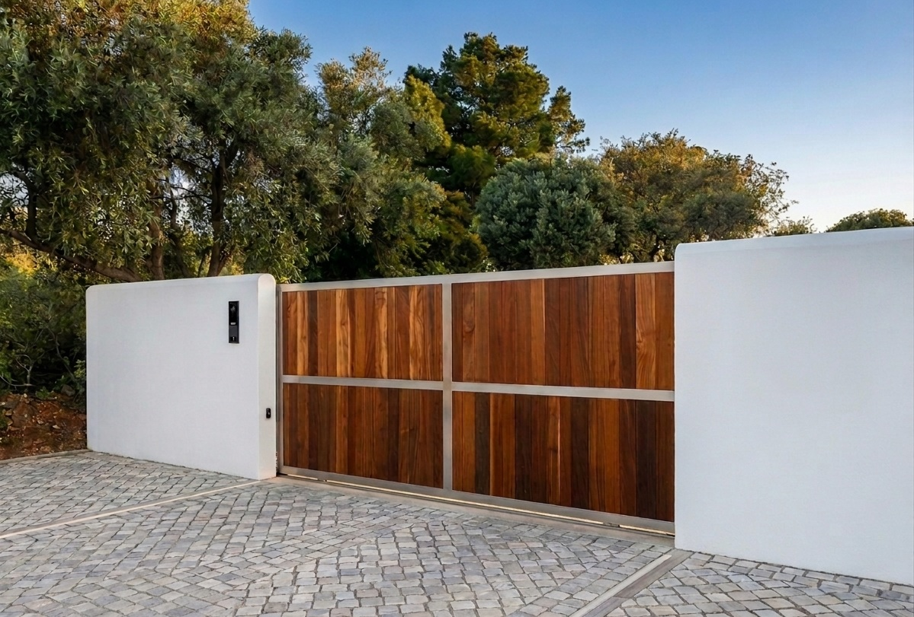
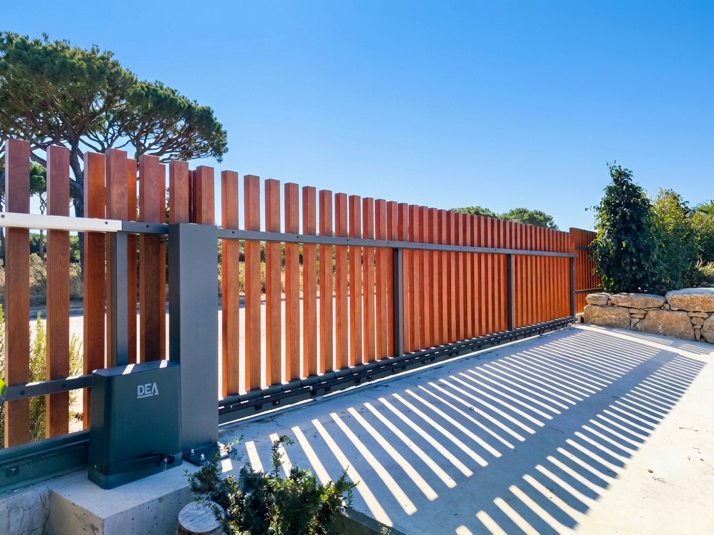
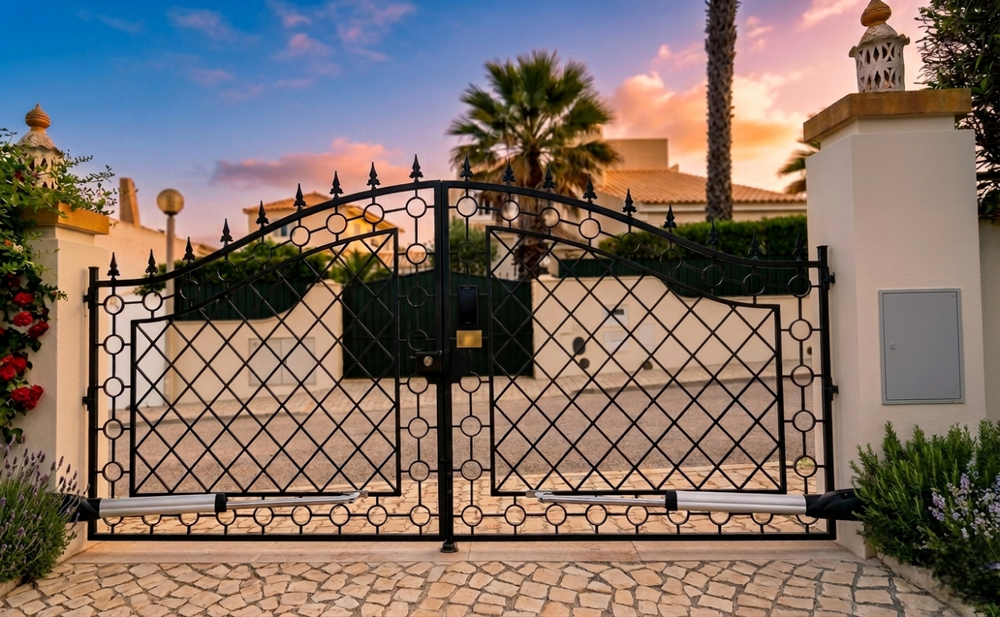
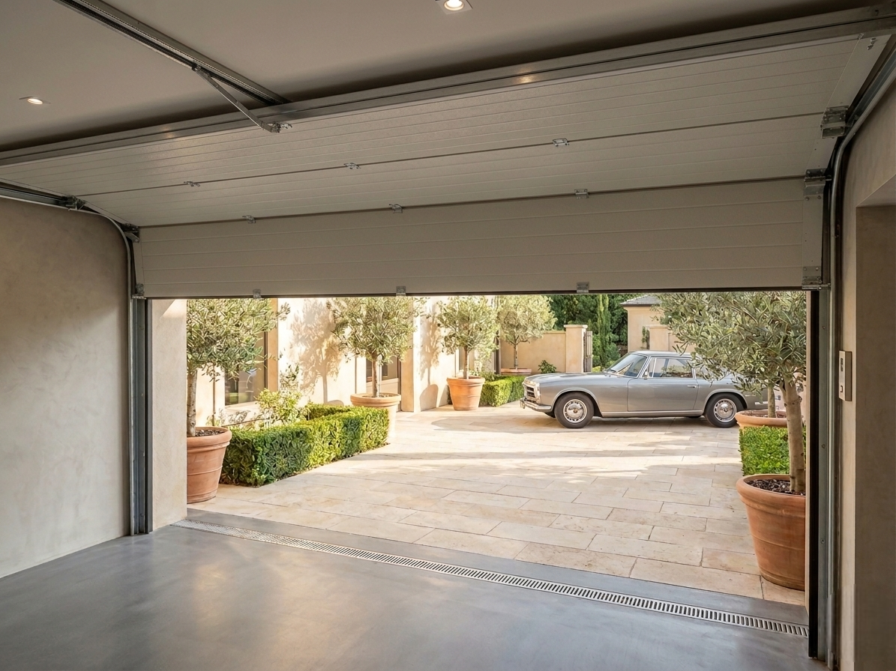
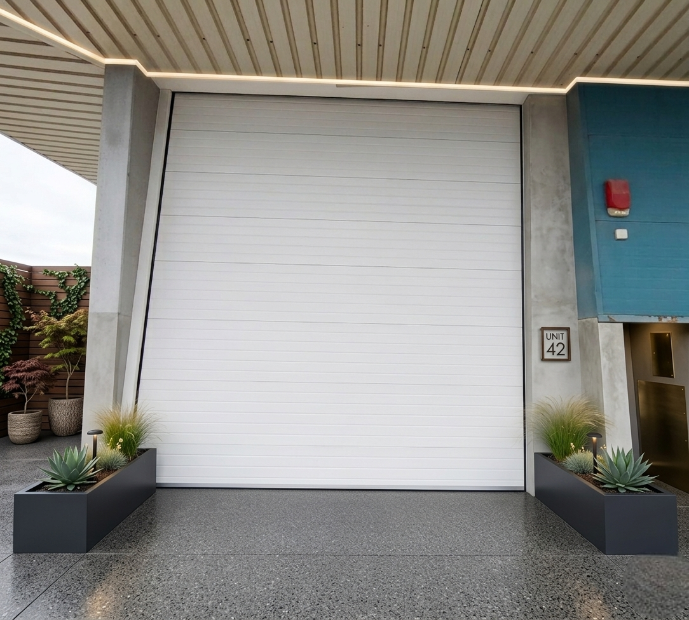
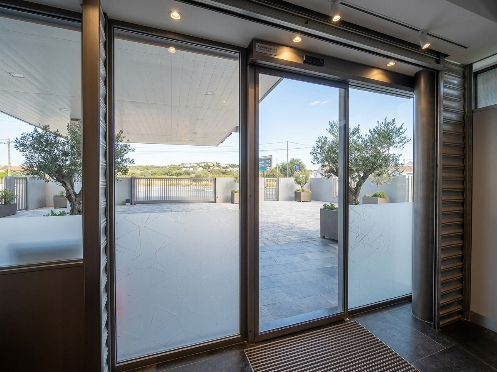
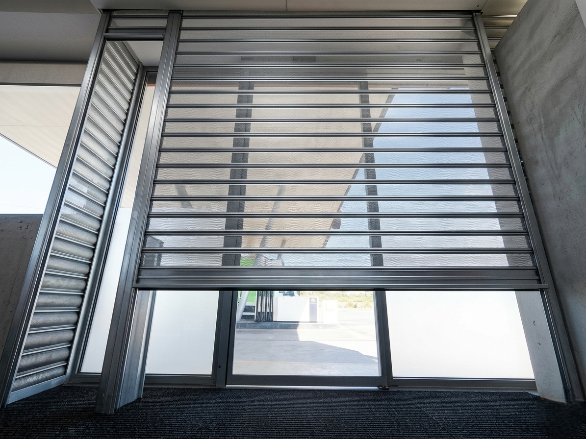
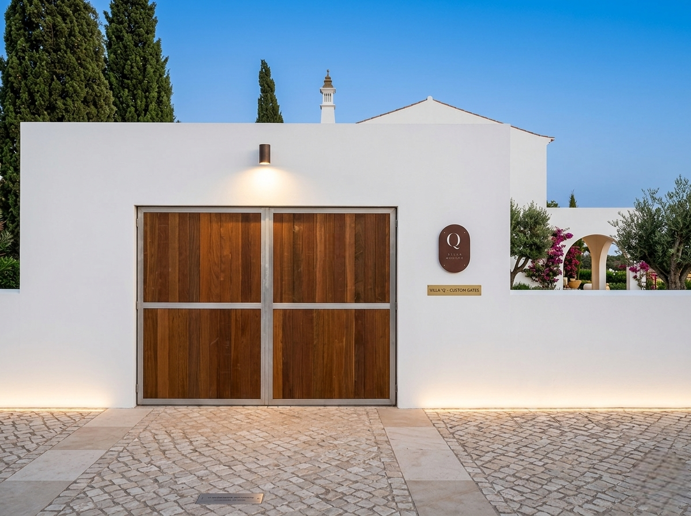
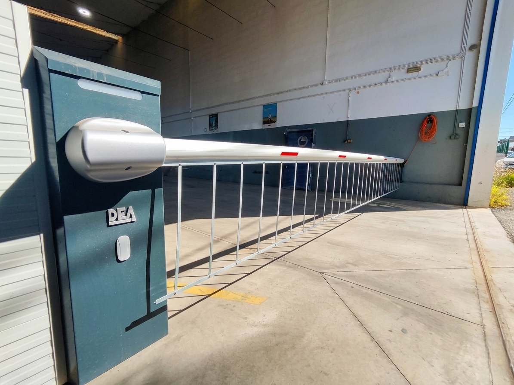
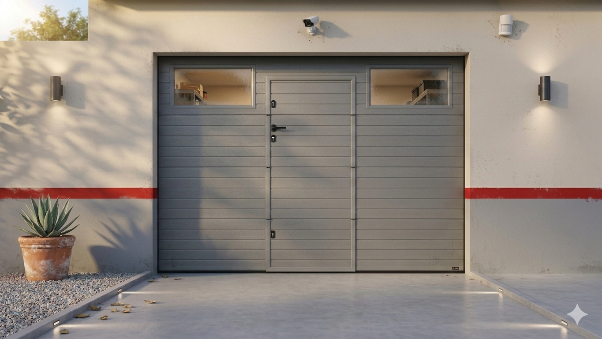

Clássico Corrediço em Madeira
A harmonia perfeita entre o charme rústico da madeira e a durabilidade da estrutura metálica. Ideal para quintas e moradias elegantes.
Automatizável
Serviço premium de venda, instalação e assistência técnica de portões automáticos. Soluções à medida, robustas e elegantes para a sua moradia ou empresa.

Soluções de Engenharia e Design
Do design clássico ao vanguardista industrial, os nossos portões oferecem a mais alta fiabilidade e segurança sem comprometer a estética.

A harmonia perfeita entre o charme rústico da madeira e a durabilidade da estrutura metálica. Ideal para quintas e moradias elegantes.

Design clássico minimalista. Há opções mais modernas que proporcionam privacidade total e integram-se subtilmente com a arquitetura moderna da sua fachada.

Elevado isolamento térmico e acústico. A solução mais versátil para garagens fechadas, otimizando o espaço útil disponível.

Robustez extrema para ambientes exigentes. Painéis articulados de 40mm em poliuretano para armazéns, stands e fábricas.

Solução elegante de uma ou duas folhas para entradas de lojas, escritórios e edifícios empresariais com elevado tráfego de pessoas.

Disponíveis em versão manual ou totalmente automática, proporcionam segurança máxima para vitrines comerciais fora de horas.

Portões de batente em madeira são ideais para quem busca um visual clássico e elegante, com a durabilidade e resistência da madeira.

As cancelas são ideais para controlar o acesso de veículos em condomínios, empresas e estacionamentos.

Portão seccionado com porta de acesso para pessoas, ideal para condomínios, empresas e estacionamentos.
Profissionalismo em cada Etapa
Montagem chave-na-mão de portões e automatismos. Incluímos toda a configuração dos motores, afinação de segurança e demonstração ao cliente.
Diagnóstico eficaz e reparação de falhas em tempo útil. Substituímos motores, centrais de comando, fotocélulas e todos os acessórios necessários.
Planos periódicos que garantem a longevidade dos seus equipamentos. Lubrificação, afinação e mitigação de riscos de avaria, protegendo o seu investimento.
Oferecemos aconselhamento à medida na região do Algarve. Com foco na excelência de instalação e um serviço de assistência pós-venda incomparável.
© 2024 Fernando Tempero - Portões e Automatismos. Todos os direitos reservados.